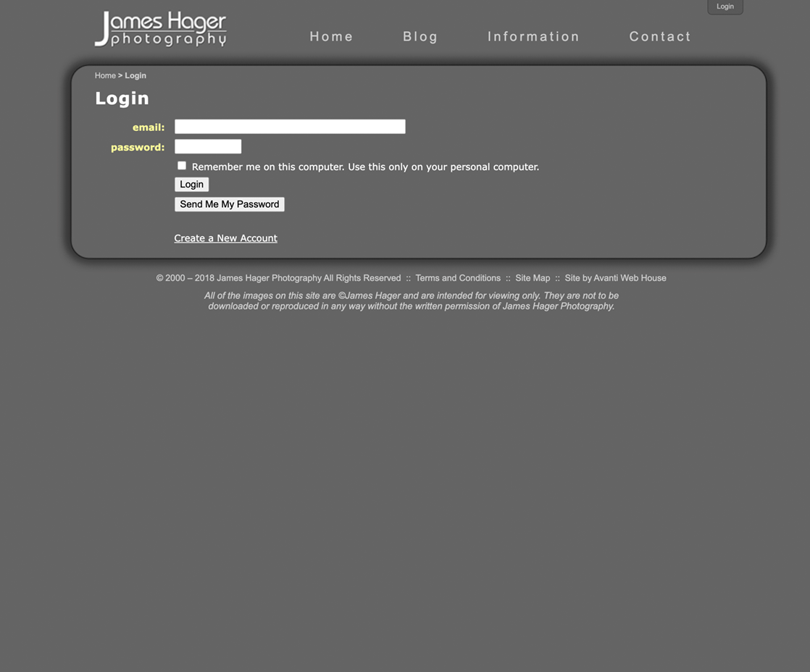
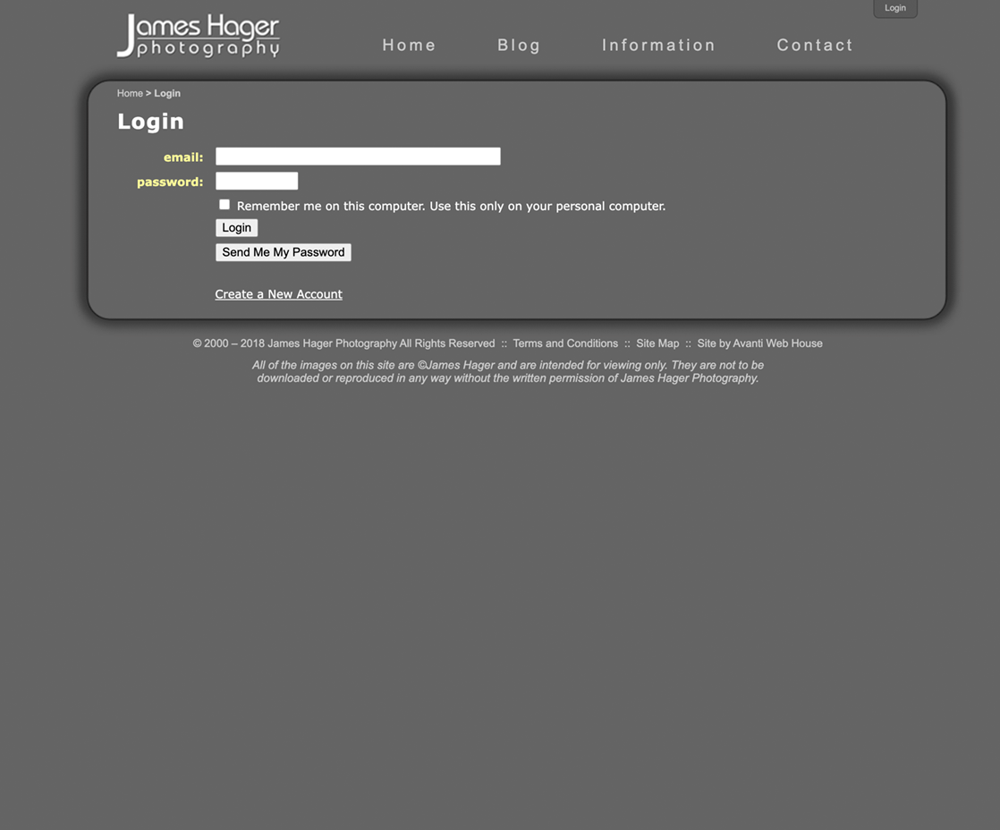

James Hager
iOS & macOS App Developer
ABOUT
I have been programming since the 1980s. I taught myself BASIC in middle school and learned Fortran in college. I worked with Fortran and Unix extensively in graduate school where I earned a Ph.D. in aerospace engineering with a concentration in computational fluid dynamics. I worked at McDonnell Douglas, and then Boeing, in research and development, where my proudest contribution was solving a stability problem with the DARPA Affordable Rapid Response Missile Demonstrator vehicle that later flew successfully as the Boeing X-51A.
After leaving the corporate world, I started a nature photography business. I photographed landscapes and wildlife, mainly in the US and Africa, and also led photo safaris to Africa.
In 2006, I learned PHP, MySQL, HTML, CSS, and JavaScript in order to develop database-driven websites.
Since 2015, I've been using Swift to develop iOS and macOS apps driven by CoreData.
I have been living full-time in my RV since 2008, and spend the majority of my time off the grid thanks to the solar-electric system I designed and installed.
PROJECTS
AWeather… an iOS App
Technology (iOS App):Swift, UIKit, CoreData, CoreLocation, MapKit, CryptoKit, XCTest
Technology (RESTful API):PHP, MySQL
More Info:AvantiApplications.com Website
AWeather, short for Avanti Weather, is a weather app for iDevices (iPhones, iPads, and iPods) that lets you manage weather forecasts from NOAA (the National Oceanic and Atmospheric Administration) and the National Weather Service (NWS) while you're on the go and away from the internet. Weather data can be downloaded for multiple locations when you have a net connection and can be viewed later whether you have a net connection or not. In addition to using the accurate NOAA/NWS forecast data, you can get the forecast for where you want it and not only for major metropolitan locations.
It obtains data from the NWS API (JSON), websites (HTML, XML), and image repositories (JPEG, TIFF).
It also connects with a dedicated RESTful API to report errors associated with the NWS feed and to: 1) report errors with the data feed, and 2) obtain weather-icon composition data for automatic over-the-air app updates.
The app is available through the Apple App Store.

iOS App Screenshots


API Admin Website Screenshots
ANotes… an iOS & macOS App
Technology:Swift, UIKit, Cocoa, CoreData, MultipeerConnectivity
I created this notes app so I could sync data between my devices w/o having an internet connection. It supports simple formatting, images, and PDF files. It can import and export notes in Evernote format and a native ANotes format.
It uses a common framework (ANotesKit) for the basic functionality that's shared between the iOS and macOS apps which have different UI frameworks and requirements.
The sync function uses a vector clock and never loses data — if there's a sync conflict, both sets of data are combined and formatted to indicate that there was a sync conflict.
This a personal app that I use every day.
iOS App Screenshots

macOS App Screenshot

Contacts… an iOS App
Technology:Swift, UIKit, CoreData
More Info:Bitbucket Repo
I created this contacts app as a code test for a job interview.
It works on iPhones in a single-view mode and on iPads in a master-detail mode, all using the same code.
The app is available through TestFlight, and requires iOS 13 or earlier.
iOS App Screenshots
ACamera… an iOS App
Technology:Swift, UIKit, AVFoundation, CoreMotion, ImageIO, Photos, Speech
More Info:Bitbucket Repo
I created this camera and photo-viewer app to play with the camera system. It can take still images and videos, and you can specify the aspect ratio of the image or video so that the framing during capture matches the desired output. The photos viewer always shows the full image in the thumbnail view instead of being cropped like in the Apple Photos app.
Voice commands can be used to operate the camera.
This a personal app that I stopped using after iPhones had multi-lens cameras.
iOS App Screenshots
Contacts… a website
Technology:JavaScript, NodeJS, Axios, ExpressJS, Sequelize, BcryptJS, PostgreSQL
More Info:GitHub Repo | Website
I created this contacts web app for my Devmountain Foundations capstone project. Each contact can have an arbitrary number of phone numbers, email addresses, and physical addresses. Clicking on the phone data will launch a phone call, clicking on the email data will launch your email app, and clicking on the address data will launch Google maps. Each contact can also have a free-form note area which supports basic HTML for simple formatting. Contacts can be assigned to user-defined groups. It has a responsive design.
Demo Video
Avanti Web House… a website
Technology:PHP, HTML, CSS, JavaScript
More Info:AvantiWebHouse.com Website
This is my web-development website. It was my first responsive design. The Free Quote page sends an email with the content of the form.
Web Screenshots

Mile High Wildlife Photo Club… a Website
Technology:PHP, HTML, CSS, JavaScript, MySQL
More Info:MHWPC.org Website
The public area provides information about the club and galleries of winning competition images.
There is a secure area for: 1) members to upload images for the monthly competitions, and 2) admin control.
The website automatically sends meeting and competition email notices to members.
Web Screenshots


RV Ramblings… a website
Technology:PHP, HTML, CSS, JavaScript, MySQL
More Info:RVRamblings.com Website
The blog system was set up so that I could create new blog entries on my laptop while away from the internet, export the necessary data to an XML file, and import that data into the live site when I had a net connection.
Web Screenshots
James Hager Photography… a website
Technology:PHP, HTML, CSS, JavaScript, MySQL
More Info:JamesHagerPhoto.com Website
I created this website to feature my nature-photography work.
The blog system was set up so that I could create new blog entries on my laptop while away from the internet, export the necessary data to an XML file, and import that data into the live site when I had a net connection.
I created the custom slideshow on the home page using JavaScript.
Web Screenshots

 

SKILLS
Languages
Swift, JavaScript, PHP, SQL, Objective-C, C#, Python
Apple Frameworks
UIKit, Cocoa, CoreData, XCTest, MessageUI, StoreKit, CoreLocation, MapKit, CryptoKit, MultipeerConnectivity, AVFoundation, CoreMotion, ImageIO, Photos, Speech
JavaScript Frameworks & Libraries
NodeJS, Axios, ExpressJS, Sequelize, BcryptJS
Databases
MySQL, PostgreSQL
Data Formats
JSON, XML
Operating Systems
macOS, Unix
Version Control
Git, GitHub, Bitbucket, Sourcetree
Environments
Xcode, VSCode, Terminal, vi, phpMyAdmin, Apache, Heroku, Rollbar, Postman, SQL Tabs